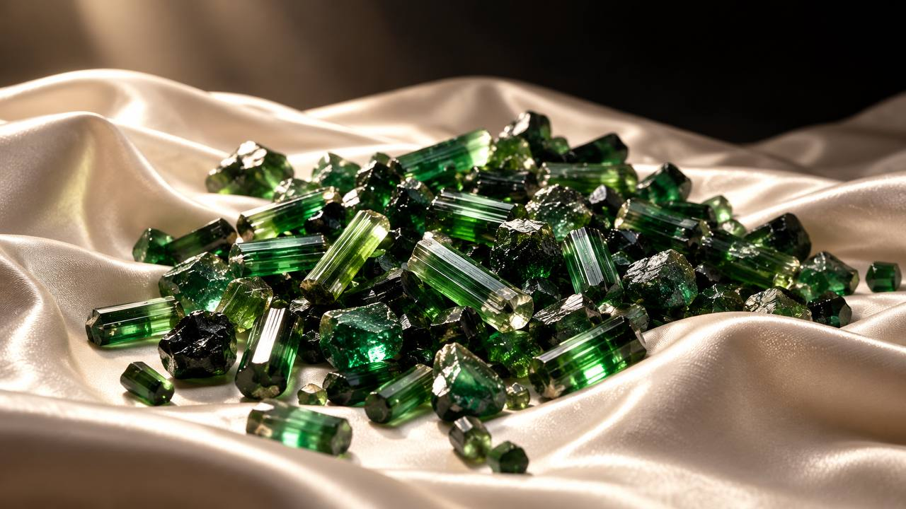
PANJSHIRSMARAGD
Kínálat
Válogatott kövek
Minden kő egyedi. Ha nem találod, amit keresel, írd meg, milyen méretet, formát és árkategóriát szeretnél, és segítünk.
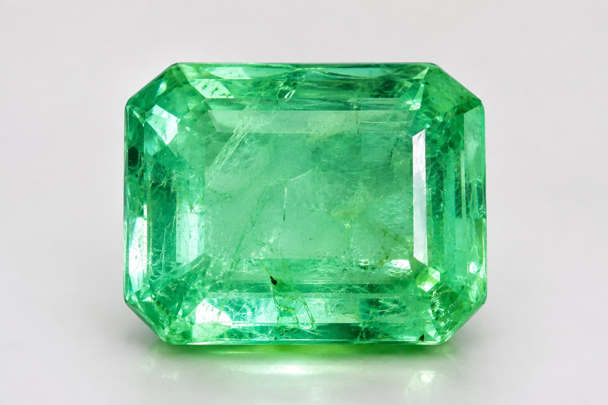
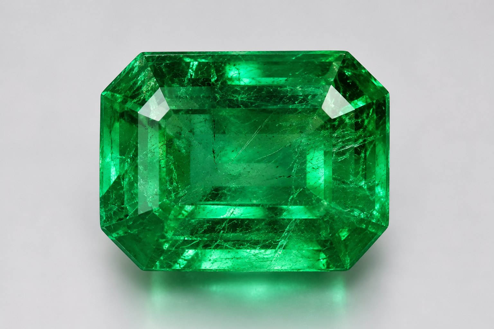
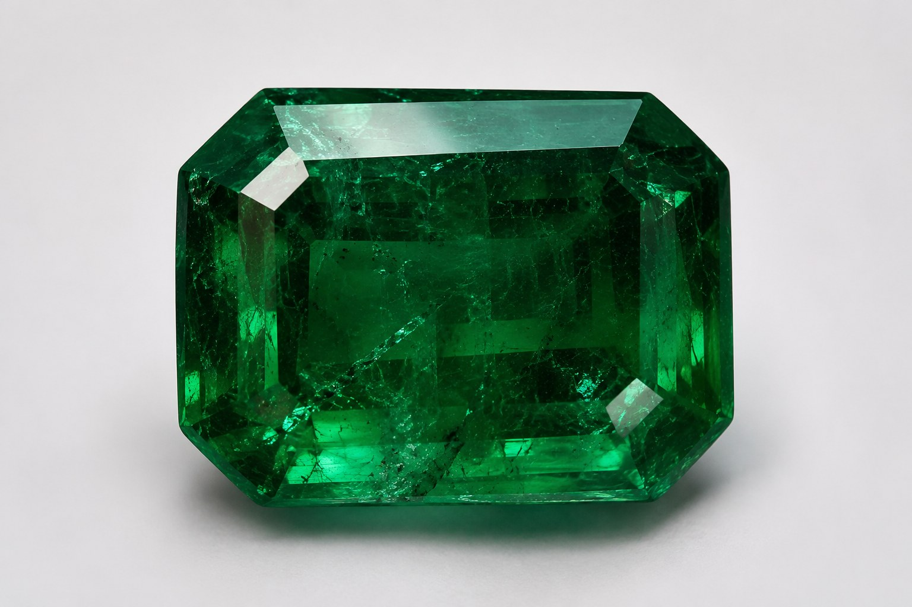
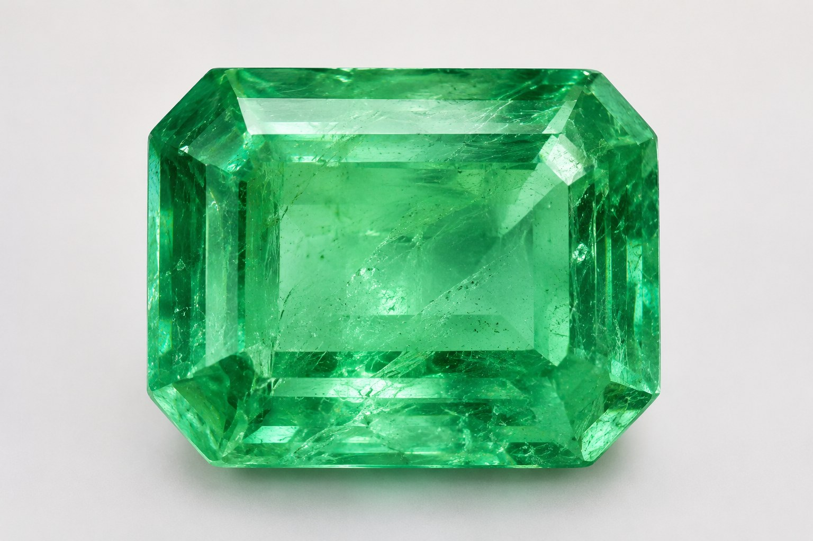
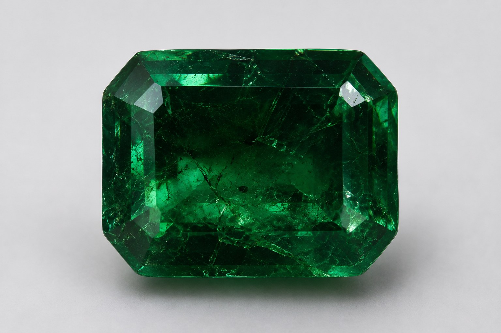
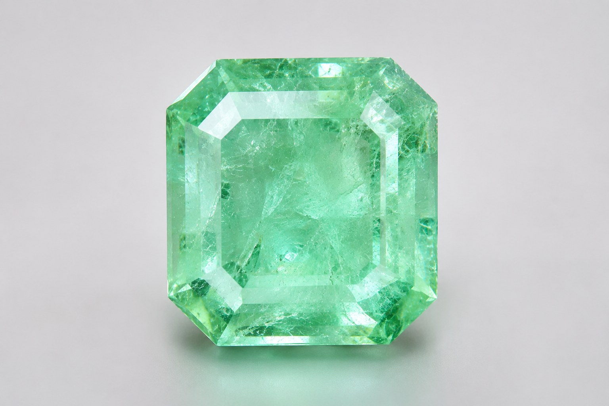
Színskála
A smaragd eredeti, természetes színvilága a világos, áttetsző zöldtől a mély, sötétzöldig terjed.
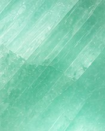
Menta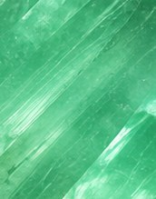
Tavaszi zöld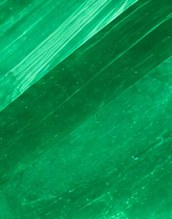
Élénk zöld (vivid green)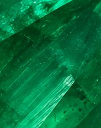
Királyi zöld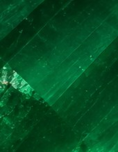
Mélyzöld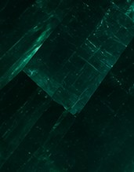
Erdőzöld
Szín
A világostól a mély, telített zöldig. A színt a kőben lévő króm adja.
Tisztaság
A legjobb pandzsíri kövek a smaragdokhoz képest kevés zárványt és repedést tartalmaznak.
Ritkaság
A csiszolt kövek többsége 5 karátnál kisebb, a nagyobb, szép kövek kifejezetten ritkák.
Tartósság
A smaragd a berill ásvány zöld változata, keménysége 7,5–8 a Mohs-skálán, ezért alkalmas mindennap viselt ékszerbe.
Amit a szakértők mondanak
A világ legjobbjai között
A svájci SSEF gemmológiai intézet 2021-ben több mint száz pandzsíri smaragdot vizsgált meg. Megállapítása szerint a 2017 óta megjelent pandzsíri kövek gyakran kiváló minőségűek, és a legjobbak a híres kolumbiai Muzo-smaragdokkal vetekednek.
Az SSEF tanulmánya (Journal of Gemmology, 2021) link kitöltendő
Átláthatóság
Amit látsz, azt kapod, papíron is
A smaragd értékét a színe, a tisztasága, a mérete és az esetleges kezelés határozza meg. Ezért minden kőről pontosan elmondjuk, mit vásárolsz.
Független laborjelentés
Minden kőhöz, nemzetközileg elismert laboratóriumtól: labor neve kitöltendő
Valós fotók és videók
Minden kőről saját felvételt készítünk, nappali és mesterséges fényben is.
Rövid beszerzési lánc
A köveket családi kapcsolatainkon keresztül, a lelőhely közeléből szerezzük be.
A pandzsíri smaragd részletesenLelőhely, bányászat, történet, választás és ápolás
A völgy
A Pandzsír-völgy Kabultól mintegy 150 kilométerre északkeletre, a Hindukus hegyei között húzódik. A név jelentése: „az öt oroszlán völgye”.
Bányászat
A smaragdot itt 3000 méter feletti magasságban, meredek hegyoldalakon, nagyrészt ma is kézi erővel bányásszák.
Történet
A völgy legalább a 18. század óta ismert smaragdlelőhely, a nemzetközi drágakőpiacon pedig az 1970-es évek óta van jelen. 2017 után egy különösen tiszta, élénk színű kőtípus került elő, amely a világ vezető gemmológiai laborjainak figyelmét is felkeltette.
Ápolás
A smaragd kemény, de a természetes zárványai miatt ütésre érzékeny lehet. Ne tisztítsd ultrahangos készülékkel vagy gőzzel, elég a langyos, enyhén szappanos víz és egy puha kefe.
Hogyan válassz smaragdot?
- A szín a legfontosabb. A legkeresettebb a tiszta, élénk, közepesen sötét zöld. A túl világos vagy túl sötét kő kevésbé értékes.
- A zárvány természetes. A smaragdban szinte mindig vannak apró belső nyomok, ezeket a szakma „jardin”-nak, azaz kertnek hívja. A tiszta, szemmel zárványmentes kő ritka, és ennek megfelelően drágább.
- Kérdezz rá a kezelésre. Az olajos kezelés bevett gyakorlat. A fokozat (nincs, csekély, mérsékelt, jelentős) viszont lényegesen befolyásolja az árat, ezért mindig legyen feltüntetve.
- A csiszolás véd is. A klasszikus „smaragdcsiszolás” (levágott sarkú téglalap) a kő színét is kiemeli, és a sarkokat is kíméli.
- Kérj laborjelentést. Csak független labor tudja igazolni, hogy a kő természetes, honnan származik, és mennyire kezelt.
Gyakori kérdésekValódiság, kezelés, ár, fizetés, szállítás és visszaküldés
Honnan tudom, hogy a kő valódi?
Minden kőhöz független laborjelentést adunk, amely igazolja, hogy természetes smaragdról van szó. A jelentés számát a labor honlapján te magad is ellenőrizheted. csak ha a labor kínál ilyet
Kezelt a kő?
A smaragdok többségét olajjal kezelik, ez a szakmában bevett gyakorlat. Minden kőnél feltüntetjük a laborjelentés szerinti kezelési fokozatot.
Miért nincs minden kőnél ár?
A kiemelkedő kövek ára egyedi. Írj nekünk, és 24 órán belül válaszolunk.
Hogyan fizethetek?
banki átutalással / bankkártyával A vásárlásról számlát állítunk ki.
Hogyan kapom meg a követ?
Biztosított, nyomon követhető küldeményként x munkanapon belül, vagy személyes átvétellel helyszín.
Visszaküldhetem?
Igen. Online vásárlás esetén a vonatkozó jogszabályok szerint 14 napon belül indoklás nélkül elállhatsz a vásárlástól. A részleteket az ÁSZF tartalmazza.
Megtekinthetem személyesen?
Igen, előzetes egyeztetéssel, helyszín: … / Jelenleg csak online.
Keress
minket.
Mondd el, milyen követ vagy ékszert keresel. Személyre szabott ajánlattal válaszolunk.